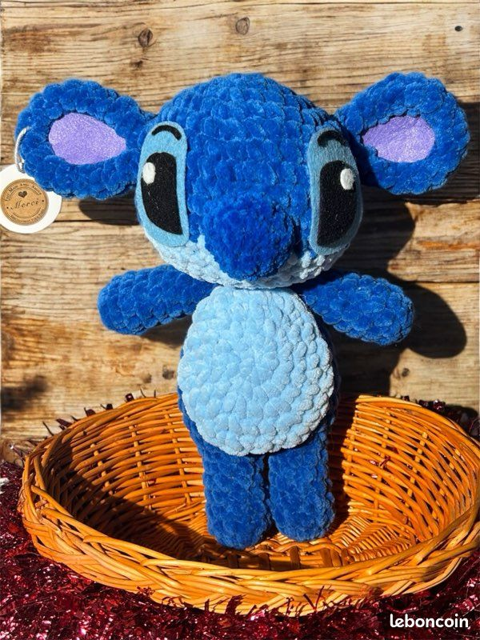
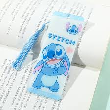

Bricolages Ohana
Crée ton propre univers Stitch avec des projets amusants !
Facile
Intermédiaire
Expert

Mini Peluche Stitch
Crée ta propre peluche Stitch avec du feutrine et du rembourrage !
30 minutes
Facile
Couture

Marque-page Stitch
Un adorable marque-page en papier pour tes lectures préférées !
15 minutes
Très Facile
Papier

Lanterne Spatiale
Une lanterne magique inspirée du vaisseau spatial de Stitch !
45 minutes
Intermédiaire
Peinture